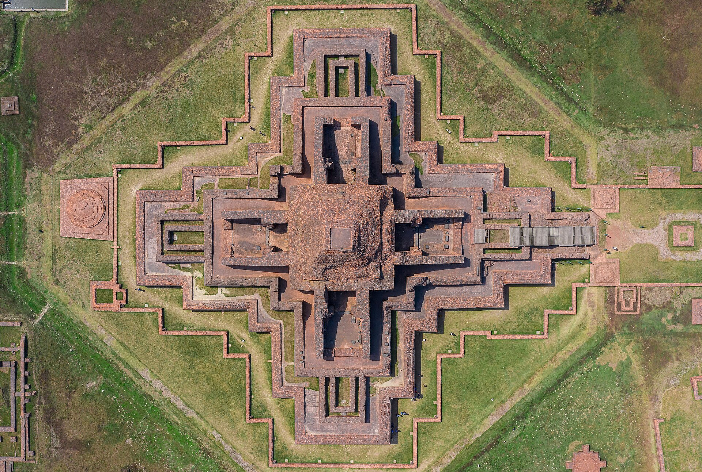

Confirm the conditions
Check current opening hours, access rules, transport, weather, and local notices before setting out. Historic sites can close or change access arrangements.
Eight divisions. 100 heritage places.
From old mosques and temples to palaces, forts, literary homes, and memorial landmarks, explore a living record of the country’s architecture, memory, and traditions.
A heritage catalogue across Bangladesh’s eight divisions

The heritage collection
Explore 100 historic and traditional sites grouped by the user’s division list. Exact, verified photographs appear where available; other entries remain useful text records.
Try a different search or remove one of your filters.
Visit thoughtfully
Check current opening hours, access rules, transport, weather, and local notices before setting out. Historic sites can close or change access arrangements.
Follow guidance for sacred spaces, fragile ruins, private buildings, and community areas. Ask before photographing people, ceremonies, or restricted interiors.
Carry out your waste, avoid touching masonry or objects, and support the local guides and communities who keep these places alive.